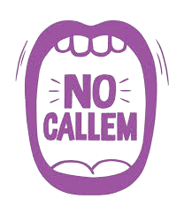

Protocolo
"No Callen"
O treinamento das equipes no protocolo  é uma parte fundamental para garantir que a resposta a uma situação de violência sexual seja rápida, sensível e eficaz. O objetivo desse treinamento é preparar os funcionários dos estabelecimentos comerciais, como bares, restaurantes, boates e outros locais de grande circulação, para que saibam identificar um pedido de ajuda e saibam exatamente como reagir, de forma segura e discreta. O treinamento inclui vários componentes-chave: 1. Sensibilização sobre violência sexual e assédio Os treinamentos começam com uma introdução ao conceito de violência sexual, assédio e agressão, destacando a importância de reconhecer esses comportamentos e as implicações psicológicas e emocionais para as vítimas. Os profissionais são instruídos a entender as diferentes formas de violência sexual, desde o assédio verbal até a agressão física, e como essas situações podem ocorrer em ambientes públicos. 2. Explicação do protocolo "No Callen" A equipe é treinada sobre o significado do termo "No Callen" (não se cale) e como ele se aplica no contexto de um pedido de ajuda de uma vítima. Através de simulações e discussões, os funcionários aprendem a reconhecer o código, que pode ser verbal ou gestual, e a identificar quando alguém está solicitando ajuda sem dizer explicitamente o que está acontecendo. 3. Como reagir ao pedido de ajuda O treinamento detalha as ações imediatas que devem ser tomadas quando um pedido de ajuda é feito. Isso inclui: Garantir a segurança da vítima: Separar rapidamente a vítima do agressor, se possível, e conduzi-la para um ambiente seguro dentro do estabelecimento. Discrição e confidencialidade: Os profissionais são orientados a agir discretamente, sem expor a vítima ou causar constrangimento, e manter total sigilo sobre o ocorrido. Acionamento de apoio: A equipe deve ser capaz de acionar, de forma rápida e eficiente, a segurança do local ou a polícia, conforme a situação. Em muitos casos, a equipe também deve garantir que os serviços médicos e psicológicos sejam acessíveis à vítima. 4. Empatia e apoio psicológico Os membros da equipe são instruídos a fornecer apoio emocional imediato, com empatia e respeito, sem pressionar a vítima a relatar o que aconteceu. O treinamento enfatiza a importância de não questionar a vítima sobre os detalhes do incidente, para evitar revitimização. Os funcionários devem ser capazes de acalmar e tranquilizar a vítima, reforçando que ela está em um ambiente seguro e que está sendo cuidada. 5. Procedimentos de documentação e coleta de provas A equipe aprende como documentar adequadamente o ocorrido, sem violar a privacidade da vítima, mas de forma que contribua para a coleta de provas, caso a vítima deseje registrar a ocorrência ou buscar medidas legais. Isso inclui a observação de comportamentos do agressor, coleta de imagens das câmeras de segurança e qualquer outro dado relevante. 6. Treinamento contínuo e atualização O protocolo "No Callen" exige que os estabelecimentos realizem treinamentos regulares e atualizações para seus funcionários, garantindo que todos estejam sempre preparados para agir de acordo com as melhores práticas. Além disso, as equipes são estimuladas a manter uma comunicação aberta sobre o protocolo e compartilhar feedbacks de situações anteriores para melhorar a resposta a novos casos. 7. Criando um ambiente de apoio Os treinamentos também incluem a construção de uma cultura interna de respeito e apoio, onde os funcionários são encorajados a apoiar uns aos outros e a se manter atualizados sobre os avanços em torno do combate à violência sexual. A colaboração entre todos os membros da equipe é essencial para garantir uma resposta eficaz e acolhedora. Em resumo, o treinamento das equipes para o protocolo "No Callen" vai além de aprender a identificar um pedido de ajuda. Ele prepara os profissionais para oferecer suporte imediato, lidar com a situação de maneira sensível e agir rapidamente para garantir a segurança da vítima, ajudando-a a buscar justiça sem medo de ser ignorada ou revitimizada.